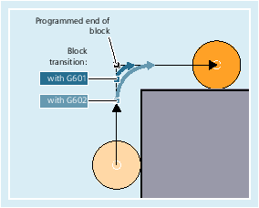
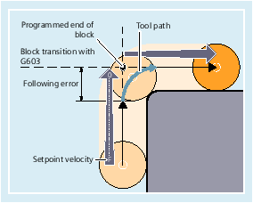
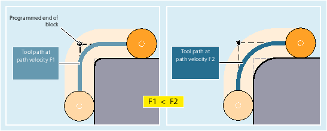

G601 / G602
G601 activates the exact stop criterion "Exact stop fine": The block change is performed as soon as the axis-specific tolerance limits for "Exact stop fine" (MD36010 $MA_STOP_LIMIT_FINE[<Ax>]) are reached for all axes involved in the traversing motion.
G602 activates the exact stop criterion "Exact stop coarse": The block change is performed as soon as the axis-specific tolerance limits for "Exact stop coarse" (MD36000 $MA_STOP_LIMIT_COARSE[<Ax>]) are reached for all axes involved in the traversing motion.
The movement is decelerated and stopped briefly at the corner point.
| Note |
Do not set the limits for the exact stop criteria any tighter than necessary. The tighter the limits, the longer it takes to position and approach the target position. |
G603
The block change is initiated when the control has calculated a set velocity of zero for the axes involved. At this time, the actual value is behind by a lag portion. The workpiece corners can now be rounded. The effect depends on the dynamic response of the axes and the path velocity:
Configured exact stop criterion
A channel-specific setting can be made for G0 and the other commands in the first G group indicating that contrary to the programmed exact stop criterion, a preset criterion should be used automatically (see the machine manufacturer's specifications).